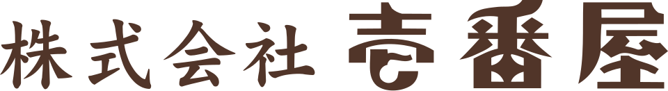

코코이찌방야 Ichibanya
코코이찌방야(Ichibanya)는 주식회사 이찌방야가 운영하는 일본의 식당 회사이다. 일본 카레 전문점으로 가장 널리 알려져 있으며, 카레하우스 코코이찌방야가 대표 업태이다.
최종 업데이트

코코이찌방야는 어떤 브랜드인가
코코이찌방야는 일본식 카레를 제공하는 카레하우스 코코이찌방야를 중심으로 식당 사업을 운영한다. 일본에서는 식당 이름 약어를 코코이찌라고 부른다.
일본과 대한민국을 포함해 전 세계에서 총 1,400점 이상을 운영하며, 2013년 1월에 세계에서 가장 큰 카레 전문점 체인으로 인정되었다. 이후 기네스 세계 기록에서도 가장 큰 카레 전문점 체인 회사로 인정받았다.
일본 밖에서 운영하는 업태는 카레하우스 코코이찌방야뿐이며, 다른 이찌방야 전문점은 일본에서만 볼 수 있다.
코코이찌방야는 어떻게 시작되고 성장했나
1978년 1월 일본 나고야 서쪽 변두리에서 첫 코코이찌방야 카레하우스 전문점이 문을 열었다. 1982년 7월에 이찌방야 주식회사를 세웠고, 다음 달에는 아이치현 이치노미야시에 두 번째 공장과 회사를 차렸다.
1988년 12월에 100번째 가게가 기후현에, 1992년 10월에 200번째 가게가 고리야마시에 열렸다. 1994년 2월에는 해외 진출을 위해 미국 하와이에 회사를 세웠고, 같은 시기 일본에서는 47개 현 전체에 전문점을 냈다.
1999년에는 5년 만에 전문점 수를 두 배로 늘렸다.
코코이찌방야의 브랜드 아이덴티티는 무엇인가
카레 전문점 체인으로 기네스 세계 기록에 인정된 일본 외식 기업이며, 일본 밖에서는 카레하우스 코코이찌방야 한 업태만 운영한다는 점이 특징이다.
코코이찌방야의 대표 제품과 서비스는 무엇인가
대표 업태는 일본식 카레를 제공하는 프랜차이즈 식당 카레하우스 코코이찌방야이다. 카레라이스뿐 아니라 돈카쓰, 함박스테이크, 우동 등 카레와 관련된 퓨전 음식을 낸다.
2003년 5월에는 이탈리아 음식과 결합한 파스타 데 코코(Pasta De Coco)를 열었으며, 이곳에서 안카케 스파게티가 탄생했다. 같은 해 카레 우동 전문점 멘야 코코이찌(面屋 CoCo壱)도 만들었다.
이후 죽 전문점 카유사료 카사이(粥茶寮 Kassai), 함박스테이크 전문점 니쿠이 테이(にっくい亭), 장어 덮밥 전문점 우나기야 이찌반(鰻屋壱番)을 차례로 열었다.
코코이찌방야는 지금 어떤 상태인가
전 세계에 식당을 1,480개 이상 열었으며, 그중 1,300개 이상이 일본에 있다. 공장과 회사도 일본에 각각 3개씩 있으며 직원은 총 731명이다.
해외에서는 하와이, 상하이, 중화민국(타이완), 대한민국, 태국, 싱가포르, 캘리포니아, 인도네시아, 필리핀, 말레이시아, 이탈리아에 진출했다.
코코이찌방야 로고는 어떻게 변해왔나
자주 묻는 질문
코코이찌방야는 어느 나라 브랜드인가요?
코코이찌방야는 일본의 식음료 브랜드입니다.
코코이찌방야는 언제 설립되었나요?
코코이찌방야는 1982년 설립되었습니다.
코코이찌방야의 브랜드 아이덴티티는 무엇인가요?
카레 전문점 체인으로 기네스 세계 기록에 인정된 일본 외식 기업이며, 일본 밖에서는 카레하우스 코코이찌방야 한 업태만 운영한다는 점이 특징이다.
코코이찌방야의 대표 제품은 무엇인가요?
대표 업태는 일본식 카레를 제공하는 프랜차이즈 식당 카레하우스 코코이찌방야이다.
코코이찌방야는 현재 어떤 상태인가요?
전 세계에 식당을 1,480개 이상 열었으며, 그중 1,300개 이상이 일본에 있다.
코코이찌방야의 본사는 어디에 있나요?
코코이찌방야의 본사는 이치노미야시에 있습니다(위키데이터 기준).
코코이찌방야의 공식 웹사이트는 어디인가요?
코코이찌방야의 공식 웹사이트는 https://www.ichibanya.co.jp 입니다.
출처와 검증
코코이찌방야 관련 참고: 공식 웹사이트 · 위키데이터 Q5986105 · 한국어 위키백과 · 영어 위키백과. 브랜드명은 한글과 원어를 함께 표기하되 데이터에 없는 표기는 만들지 않습니다. 기원 국가·설립연도는 검수된 정의문에서 확인된 값을 우선하고, 없을 때만 공식 웹사이트 URL이 일치하는 위키데이터 개체의 값을 씁니다. 웹 첫 보관은 인터넷 아카이브가 공식 사이트 첫 화면을 처음 보관한 날로, 사이트 개설일과 다를 수 있습니다. 위키데이터 값은 2026-11-06 기준입니다.